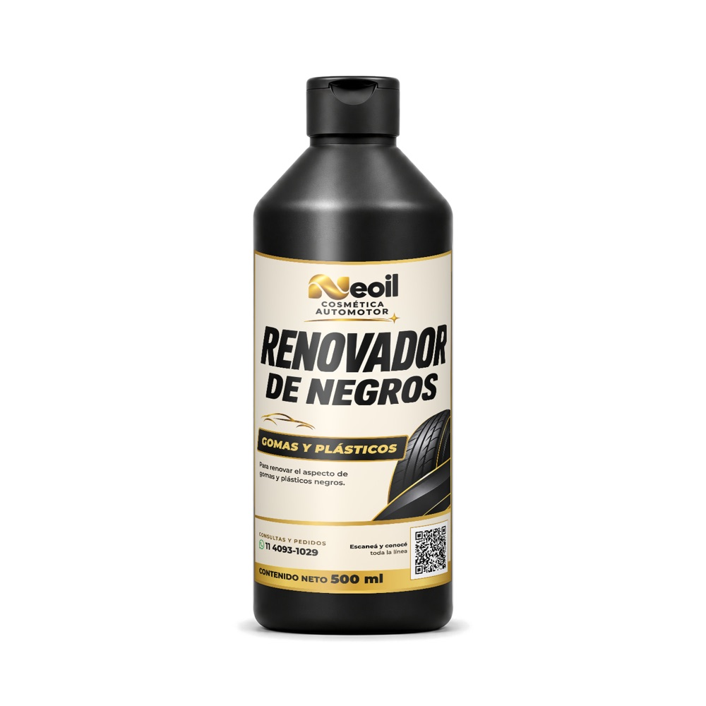

Terminación exterior
Renovador de negros.
Para renovar el aspecto de gomas y plásticos negros.
Contenido neto: 500 ml
Consultar por WhatsApp
Presentación.

Para qué sirve.
- Renovar el negro de los neumáticos.
- Mejorar el aspecto de plásticos negros exteriores.
- Dar la terminación después del lavado.
Cómo se usa.
- Aplicá sobre la superficie limpia y seca.
- Distribuí con una esponja o aplicador.
- Dejá secar antes de mover el vehículo.